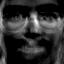

class: center, middle ### W4995 Applied Machine Learning # Introduction to Recommender Systems 05/01/19 Nicolas Hug ??? Work with Andreas as a postdoc Working on sklearn Studied RS a lot during my PhD --- # Recommender Systems: examples - product recommendation: books, movies - friends recommendation - news feed - cars, credit cards - Amazon, Netflix, Facebook, Youtube, Twitter... - Ultimate goal: help the user to make decisions (and make money) - It's vaaaaaast topic! ??? Basically the goal is to help users making decision and present them with a restricted choice of product that they can interact with There exists RS for pretty much any kind of products Very wide topic both in research and industry Many different applications Many different problem formulation Actually many different definitions so only gonna scratch the surface today The goal here is that at the end you get a decent idea of what the fundamental ideas are behind recommendation algorithms --- # What we'll cover 1. Taxonomy: Collaborative Filtering, Content-based, Knowledge-based 2. Collaborative Filtering: - Neighborhood methods - Matrix factorization 3. Examples with Surprise 4. Recommendation with neural networks ??? We'll focus on CF because they tend to be more critical when it comes to making good recommendations the 2 techniques we'll describe are basic and quite old now, but very fundamental --- # Different kinds of RS (1) **Content-based recommendation** - Leverage information about items **content** and target user history - Based on the item *profiles* (metadata) - e.g. for movie: director, actors, genre, ... - Looks a lot like traditional classification with text-based (extracted) features - Tend to recommend items that are similar to those liked in the past *Oh you just bought a fridge? I'm sure you'll love these 5 other million fridges* ??? leverage 2 kinds of info: - items content: movie examples - and target user history, in contrast with CF where you use the whole history Operate a lot in the text domain. Typically used for news feed recommendation. Shouldn't use them for movies unless that's the only kind of available info you have. A lot of feature engineering, esp feature extraction from text data build a classification or regression model for every user usually a small set of feature descriptors: not very diverse recommendation tend to recommend only similar items one advantage is that it's easy to explain recommendations --- # Different kinds of RS (2) **Collaborative Filtering** - Leverage *social* information (not just info about the target user) - typically based on past user-item interactions * **explicit** feedback: Bob likes *The Advengers*: ★ ★ ★ ★ ☆ * **implicit** feedback: Bob has watched *The Advengers* -- Bob has visited a web page related to *The Advengers* Typically: - neighborhood methods: recommend me items liked by my peers - or fancier models like matrix factorization ??? CB: only target user history. CF: all of users history. not just target user. history: - explicit feedback. Can be binary (like / dislike) or ordinal (1-5 scale like amazon) - implicit feedback. Not explicitly metioned. User behavior most of the alogirthms are inspired from traditional ML algorithms but need to be modified - neighborhood methods (k-NN) - MF (from dimensionality reduction) --- # Different kinds of RS (3) **Knowledge based** - Leverage **user requirements** - Used for cars, loans, real estate - Very task specific ??? Usually takes the form of an interactive session car -> SUV vs crossover vs pickup -> leather seats -> AC -> color... Called knowledge based because you filter out item based on knowledge about the target domain in contrast to the 2 previous techniques which do not really require any domain knowledge. very task specific: RS for car looks nothing like a RS for credit cards, unlike e.g. CF where a RS for books looks a lot like an RS for movies. --- # Different kinds of RS (4) In practice, frontier isn't sharp Models are always **hybrid** (e.g.: neural nets) We'll talk about cornerstones of Collaborative Filtering: - neighborhood methods (k-NN) - matrix factorization And also a bit of neural network recommendation ??? We'll focus on CF because they tend to be more critical when it comes to making good recommendations the 2 techniques we'll describe are basic and quite old now, but very fundamental --- class: center # Collaborative Filtering ### The rating prediction problem `$$\begin{pmatrix} \color{#ff2c2d}{?} & 2 & \color{#ff2c2d}{?} & 3 & 1\\ 1 & 5 & 1 & 4 & \color{#ff2c2d}{?}\\ \color{#ff2c2d}{?} & 4 & \color{#ff2c2d}{?} & \color{#ff2c2d}{?} & \color{#ff2c2d}{?}\\ 2 & 3 & \color{#ff2c2d}{?} & 5 & 1\\ 2 & \color{#ff2c2d}{?} & 4 & \color{#ff2c2d}{?} & 3\\ \color{#ff2c2d}{?} & 1 & 4 & 5 & \color{#ff2c2d}{?}\\ \end{pmatrix} \begin{matrix} \text{Alice}\\ \text{Bob}\\ \text{Charlie}\\ \text{Daniel}\\ \text{Eric}\\ \text{Frank}\\ \end{matrix} $$` Rows are users, columns are items Fill the gaps! ??? We'll describe algorithms that address the rating prediction problem Disclaimer: we're using explicit ratings. Both research and industry have moved on to implicit ratings (much easier to collect, and tend to yield better results). --- # rating prediction != classification or regression `$$\begin{pmatrix} \checkmark & \color{#ff2c2d}{?} & \checkmark & \color{#ff2c2d}{?} & \color{#ff2c2d}{?}\\ \color{#ff2c2d}{?} & \color{#ff2c2d}{?} & \color{#ff2c2d}{?} & \color{#ff2c2d}{?} & \checkmark\\ \checkmark & \color{#ff2c2d}{?} & \checkmark & \checkmark & \color{#ff2c2d}{?}\\ \color{#ff2c2d}{?} & \color{#ff2c2d}{?} & \checkmark & \color{#ff2c2d}{?} & \color{#ff2c2d}{?}\\ \color{#ff2c2d}{?} & \checkmark & \color{#ff2c2d}{?} & \checkmark & \color{#ff2c2d}{?}\\ \checkmark & \color{#ff2c2d}{?} & \color{#ff2c2d}{?} & \color{#ff2c2d}{?} & \checkmark\\ \end{pmatrix} \neq \begin{pmatrix} \checkmark & \checkmark & \checkmark & \checkmark & \checkmark \\ \checkmark & \checkmark & \checkmark & \checkmark & \checkmark \\ \checkmark & \checkmark & \checkmark & \checkmark & \checkmark \\ \checkmark & \checkmark & \checkmark & \checkmark & \checkmark \\ \checkmark & \checkmark & \checkmark & \checkmark & \color{#ff2c2d}{?} \\ \checkmark & \checkmark & \checkmark & \checkmark & \color{#ff2c2d}{?} \\ \end{pmatrix} $$` ??? Some kind of generalization Not just a single feature Not even clear what a feature is: users, or items? This here is the reason you cannot use sklearn or traditional ML packages for recommendation. --- # Neighborhood methods - We have a history of past ratings - **We need to predict Alice's rating for Titanic** 1. Find the users that have the same tastes as Alice, using the rating history 2. Average their rating for Titanic That's it! How to find similar users? use a **similarity metric** --- # Similarity computation `$$\begin{pmatrix} \color{#ff2c2d}{?} & \color{#fa0}{2} & ? & \color{#fa0}{2} & \color{#fa0}{5} & ? & \color{#fa0}{4}\\ 1 & \color{#1b91ff}{1} & ? & \color{#1b91ff}{3} & \color{#1b91ff}{5} & ? & ?\\ & & & \vdots & & &\\ 4 & \color{#1b91ff}{5} & ? & ? & \color{#1b91ff}{1} & 4 & \color{#1b91ff}{2}\\ \end{pmatrix} \begin{matrix} \text{Alice}\\ \text{Bob}\\ \vdots\\ \text{Zoe}\\ \end{matrix} $$` - `$\text{sim}(u, v) =$` number of common rated items - `$\text{sim}(u, v) =$` average absolute difference between ratings (it's actually a distance) - `$\text{sim}(u, v) =$` cosine angle between $u$ and $v$ - `$\text{sim}(u, v) =$` Pearson correlation coefficient between $u$ and $v$ - ... ??? Main idea: if 2 users tend to rate items in the same way, their similarity must be high. --- # Training and prediction - Training: pre-compute the `n_users * n_users` similarity matrix - Predicting: weighted average of the neighbors ratings `$$\hat{r}_{ui} = \frac{\sum\limits_{v \in k\text{NN}(u)} \text{sim}(u, v) \times r_{vi}}{\sum\limits_{v \in k\text{NN}(u)} \text{sim}(u, v)}$$` --- # Same, with code ```python def predict_rating(u, i): """Return estimated rating of user u for item i.""" # rating_history is a list of tuples (user, item, rating) # Retrieve users having rated i neighbors = [(sim[u, v], r_vj) for (v, j, r_vj) in rating_history if (i == j)] # Sort them by similarity with u neighbors.sort(key=lambda tple: tple[0], reversed=True) # Compute weighted average of the k-NN's ratings num = sum(sim_uv * r_vi for (sim_uv, r_vi) in neighbors[:k]) denum = sum(sim_uv for (sim_uv, _) in neighbors[:k]) return num / denum ``` ??? You could also not care about wether the neighbors have rated the target item. In this case you don't even need to store the similarity matrix, you just need the list of the k neighbors an directly use it. No sim matrix, no sorting step. --- # There are lots of variants - Normalize the ratings - Remove bias (some users are mean) - Use a fancier aggregation - Discount similarities (give them more or less confidence) - **Use item-item similarity instead** - Or use both kinds of similarities! - Cluster users and/or items - Learn the similarities - Blah blah blah... ??? Item item: usually more common actually. Since you have less items than users, it's faster. I presented it the other way because think it's more intuitive. --- # Matrix Factorization Made some people rich (Netflix Prize: improve Netflix RMSE by 10%)  Model the ratings in an insightful way Still a cornerstone of modern RS Takes its root in dimensionality reduction and **SVD** ??? Going to describe the way that it was used during the netflix prize we kind of "re descovered" how efficient they could be during this contest It wasn't a new idea, it was just being used in new ways that were really efficient, and it gained a lot of traction --- # PCA refresher (1) <ul> <li>Here are 400 greyscale images (64 x 64):</li> <img src="images/faces/face_1/face.jpg"> <img src="images/faces/face_3/face.jpg"> <img src="images/faces/face_5/face.jpg"> <img src="images/faces/face_6/face.jpg"> <img src="images/faces/face_7/face.jpg"> <img src="images/faces/face_9/face.jpg"> <li> Put them in a 400 x 4096 matrix $X$: $$ \newcommand{\horzbar}{\color{black}{\Rule{2.5ex}{0.5pt}{0.1pt}}} \newcommand{\vertbar}{\color{black}{\Rule{0.5pt}{1pt}{2.5ex}}} X= \begin{pmatrix} \horzbar & \text{Face 1} & \horzbar\\ \horzbar & \text{Face 2} & \horzbar\\ & \vdots &\\ \horzbar & \text{Face 400} & \horzbar\\ \end{pmatrix} $$ </li> </ul> --- # PCA refresher (2) PCA will *reveal* 400 of these eigen faces <br> <img src="images/faces/eigenface_0.jpg"> <img src="images/faces/eigenface_1.jpg"> <img src="images/faces/eigenface_2.jpg"> <img src="images/faces/eigenface_6.jpg">  <br> These eigenfaces can build back all of the original faces <br> <br> <div style="float:left"> <font size=5> $ \begin{align*} \text{Face 1} = &\alpha_1 \cdot \text{Creepy guy #1}\\ + &\alpha_2 \cdot \text{Creepy guy #2}\\ + &\cdots\\ + &\alpha_{400} \cdot \text{Creepy guy #400} \end{align*} $ <br> PCA also gives you the $\alpha_i$. <br> </div> <div style="float:right"> </div> --- You actually don't need all the 400 eigenfaces to have a good approximation: <img src="images/faces/face_5/anim.gif" width=230> --- # PCA on a rating matrix? Sure! Assume all ratings are <font color="#fa0">known</font> `$$ X = \begin{pmatrix} \horzbar & \text{Face 1} & \horzbar\\ \horzbar & \text{Face 2} & \horzbar\\ & \vdots &\\ \horzbar & \text{Face 400} & \horzbar\\ \end{pmatrix} ~~~~~ R = \begin{pmatrix} \horzbar & \text{Alice} & \horzbar\\ \horzbar & \text{Bob} & \horzbar\\ & \vdots &\\ \horzbar & \text{Zoe} & \horzbar\\ \end{pmatrix} $$` <font color="#fa0">Exact</font> same thing! We just have ratings instead of pixels. PCA will reveal <font color="#1b91ff">typical users</font>. `$$ \begin{align*} \text{Alice} &= 10\% \color{#1b91ff}{\text{ Action fan}} + 10\% \color{#1b91ff}{\text{ Comedy fan}} + 50\% \color{#1b91ff}{\text{ Romance fan}} +\cdots\\ \text{Bob} &= 50\% \color{#1b91ff}{\text{ Action fan}} + 30\% \color{#1b91ff}{\text{ Comedy fan}} + 10\% \color{#1b91ff}{\text{ Romance fan}} +\cdots\\ \text{Zoe} &= \cdots \end{align*} $$` --- # PCA on a rating matrix? Sure! Assume all ratings are <font color="#fa0">known</font>. Transpose the matrix `$$ X = \begin{pmatrix} \horzbar & \text{Face 1} & \horzbar\\ \horzbar & \text{Face 2} & \horzbar\\ & \vdots &\\ \horzbar & \text{Face 400} & \horzbar\\ \end{pmatrix} ~~~~~ R^T = \begin{pmatrix} \horzbar & \text{Titanic} & \horzbar\\ \horzbar & \text{Toy Story} & \horzbar\\ & \vdots &\\ \horzbar & \text{Fargo} & \horzbar\\ \end{pmatrix} $$` <font color="#fa0">Exact</font> same thing! PCA will reveal <font color="#1b91ff">typical movies</font>. `$$ \begin{align*} \text{Titanic} &= 20\% \color{#1b91ff}{\text{ Action}} + 0\% \color{#1b91ff}{\text{ Comedy}} + 70\% \color{#1b91ff}{\text{ Romance}} +\cdots\\ \text{Toy Story} &= 30\% \color{#1b91ff}{\text{ Action}} + 60\% \color{#1b91ff}{\text{ Comedy}} + 0\% \color{#1b91ff}{\text{ Romance}} +\cdots\\ \end{align*} $$` Note: in practice, the factors semantic is not clearly defined. --- # SVD is PCA<sup>2</sup> - PCA on $R$ gives you the typical <font color="#fa0">users</font> $U$ - PCA on $R^T$ gives you the typical <font color="#fa0">movies</font> $M$ - SVD gives you <font color="#1b91ff">both</font> in one shot! `$$R = M \Sigma U^T$$` $\Sigma$ is diagonal, it's <i>just</i> a scaler. `$$\bbox[5px,border:2px solid #1b91ff]{R = M U^T}$$` This is our <font color="#fa0">matrix factorization</font>! --- #The model of SVD `$$ \bbox[5px,border:2px solid #1b91ff]{R = M U^T}\\ \begin{pmatrix} &&&&\\ &&r_{ui}&&\\ &&&&\\ \end{pmatrix} = \begin{pmatrix} &&&&\\ &\horzbar&p_u& \horzbar&\\ &&&&\\ \end{pmatrix} \begin{pmatrix} &&\vertbar&&\\ &&q_i&&\\ &&\vertbar&&\\ \end{pmatrix}\\ r_{ui} = p_u \cdot q_i $$` `$$ \begin{align*} r_{ui}= \sum_{c \in \text{concepts}} \text{affinity of } u \text{ for } c \times \text{affinity of } i \text{ for }c \end{align*} $$` `$$ \begin{align*} \text{Titanic} &= 20\% \color{#1b91ff}{\text{ Action}} + 0\% \color{#1b91ff}{\text{ Comedy}} + 70\% \color{#1b91ff}{\text{ Romance}} +\cdots\\ \text{Alice} &= 15\% \color{#1b91ff}{\text{ Action}} + 0\% \color{#1b91ff}{\text{ Comedy}} + 80\% \color{#1b91ff}{\text{ Romance }} +\cdots\\ \text{Bob} &= 10\% \color{#1b91ff}{\text{ Action}} + 80\% \color{#1b91ff}{\text{ Comedy }} + 5\% \color{#1b91ff}{\text{ Romance }} +\cdots\\ \end{align*} $$` - Rating(Alice, Titanic) will be high - Rating(Bob, Titanic) will be low --- class: center # Projection in a latent space  From Stanford [CS246](http://cs246.stanford.edu) --- #So how to compute $M$ and $U$? **We assumed that $R$ had no missing entry! But it's actually very sparse** - SVD of a dense matrix is easy - SVD of a sparse matrix is easy - But we don't want to treat the missing entries as zero! (too biased) <font color="#fa0">Alternate option</font>: find the `$p_u$`s and the `$q_i$`s that minimize the reconstruction error `$$\sum_{r_{ui} \in R} (r_{ui} - p_u^t \cdot q_i)^2$$` (With some orthogonality constraints, that we ignore) --- # 'SVD' of a rating matrix: optimization $F$ = number of factors Find $p_u \in \mathbb{R}^F$ and $q_i \in \mathbb{R}^F$ for all users and item that minimize: `$$f(p, q) = \sum_{r_{ui} \in \text{R_train}} (r_{ui} - p_u \cdot q_i)^2$$` Classical sum of squared errors! 2 main techniques: - Stochastic Gradient Descent - Alternating Least Squares - Fix the $p_u$ and optimize the $q_i$, then fix the $q_i$ and optimize the $p_u$. Repeat. - Can be map-reduced --- # Optimization with SGD ```python def compute_SVD(): '''Fit pu and qi to known ratings by SGD''' p = np.random.normal(size=(n_users, n_factors)) q = np.random.normal(size=(n_items, n_factors)) for iter in range(n_max_iter): for u, i, r_ui in rating_history: err = r_ui - np.dot(p[u], q[i]) p[u] = p[u] + learning_rate * err * q[i] q[i] = q[i] + learning_rate * err * p[u] def predict_rating(u, i): return np.dot(p[u], q[i]) ``` --- #Some last details Unbias the ratings, add regularization: you get "<i>SVD</i>": `$$ \begin{align*} \min_{p_u, q_i, b_u, b_i} \sum_{r_{ui} \in R} \begin{pmatrix} \left[r_{ui} - (\mu + b_u + b_i + p_u^Tq_i)\right]^2\\ + \lambda \left(||p_u||^2 + ||q_i||^2 + b_u^2 + q_i^2\right) \end{pmatrix} \end{align*} $$` </font> Biases (or *baselines*) $b_u$ model the tendency of some users to give high/low ratings. Same for items Pretty far from the traditional Linear Algebra SVD But very good at predicting ratings **Has been extended in zillions of different forms** --- class:center,middle # Surprise [https://surprise.readthedocs.io/](https://surprise.readthedocs.io/) ``` pip install scikit-surprise ``` or ``` conda install -c conda-forge scikit-surprise ``` Python lib for explicit ratings prediction --- ```python from surprise import SVD from surprise import Dataset from surprise import accuracy from surprise.model_selection import train_test_split data = Dataset.load_builtin('ml-100k') trainset, testset = train_test_split(data, test_size=.25) algo = SVD(n_factors=100, n_epochs=20, verbose=True) algo.fit(trainset) predictions = algo.test(testset) accuracy.rmse(predictions, verbose=True) ``` ``` RMSE: 0.9376 ``` --- ```python from surprise import KNNBasic from surprise import Dataset from surprise.model_selection import cross_validate data = Dataset.load_builtin('ml-100k') sim_options = {'name': 'cosine', # 'pearson', 'pearson_baseline', 'msd' 'user_based': False} # compute sim between items algo = KNNBasic(k=40, sim_options=sim_options) cross_validate(algo, data, cv=5, verbose=True) ``` ``` Fold 1 Fold 2 Fold 3 Fold 4 Fold 5 Mean Std RMSE (testset) 1.0276 1.0193 1.0186 1.0318 1.0357 1.0266 0.0068 MAE (testset) 0.8130 0.8069 0.8070 0.8151 0.8175 0.8119 0.0043 Fit time 1.57 1.64 1.55 1.68 1.72 1.63 0.06 Test time 3.58 3.31 3.39 3.58 3.64 3.50 0.13 ``` --- # Surprise - Custom CV iterators like in `scikit-learn` - `GridSearchCV`, `RandomizedSearchCV` - Other prediction algorithms (MF, Neighborhood-based, baselines, etc...) - You can also write your own --- class: center # Neural recommendations  From [He & al, Neural Collaborative Filtering](https://arxiv.org/abs/1708.05031) ??? Lot of different ways to use NN in reco, just going to talk about a few of them Picture from paper from about 2 years ago Adds a lot of flexibility - Plugable losses (e.g. triplet loss, [BPR](https://arxiv.org/abs/1205.2618)...) - Let the NN learn the embedding - Let the NN learn the interactions (not just a dot product) - Embed additional sources of info --- class: center # Embed whatever you want (1)  Image from [Olivier Grisel](http://ogrisel.github.io/decks/2017_dotai_neural_recsys/) --- class: center # Embed whatever you want (2)  Image from [Olivier Grisel](http://ogrisel.github.io/decks/2017_dotai_neural_recsys/) --- class: center # Embed whatever you want (3)  From [Deep Neural Networks for YouTube Recommendations](https://ai.google/research/pubs/pub45530) --- class: center # Recommendation as sequence prediciton with RNNs  From [Session-based Recommendations with RNNs](https://arxiv.org/abs/1511.06939) --- class: center # Spotlight Pytorch-based neural recommendation library [https://github.com/maciejkula/spotlight](https://github.com/maciejkula/spotlight) ``` conda install -c maciejkula -c pytorch spotlight=0.1.5 ``` ## Also check out Microsoft RS repo Collection of notebooks with many different techniques [https://github.com/Microsoft/Recommenders](https://github.com/Microsoft/Recommenders) --- class: center, middle # Questions ?